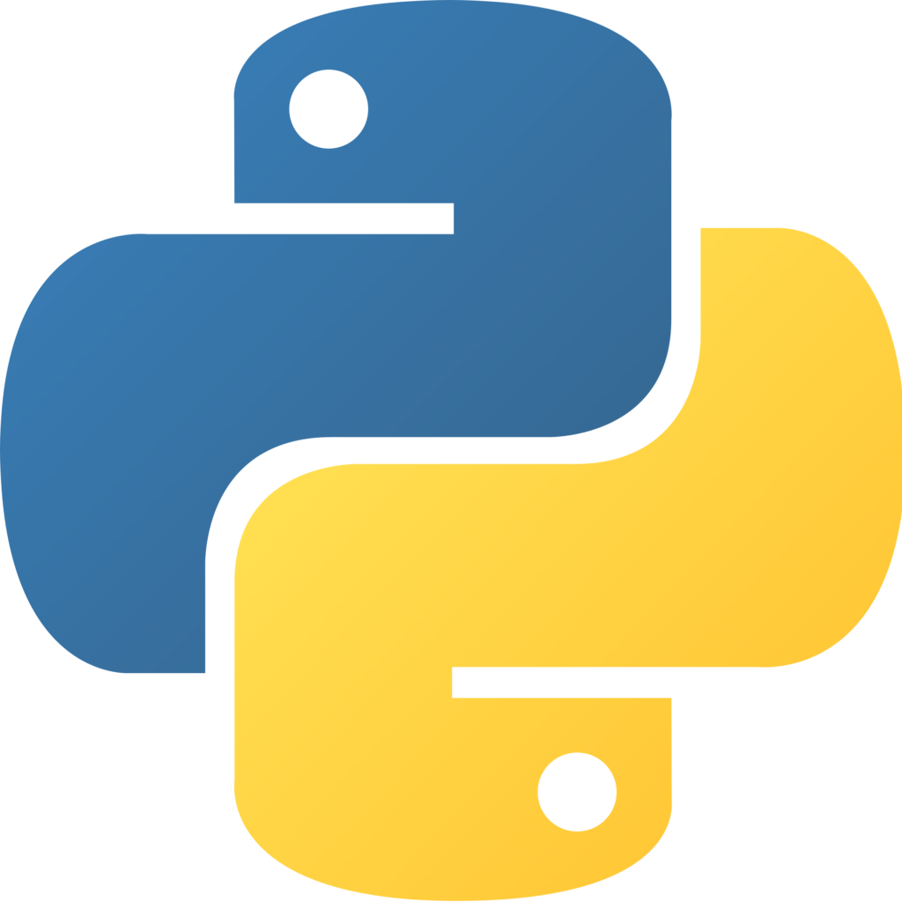

The notation is a mixture of EBNF and PEG. In particular, & followed by a symbol, token or parenthesized group indicates a positive lookahead (i.e., is required to match but not consumed), while ! indicates a negative lookahead (i.e., is required _not_ to match). We use the | separator to mean PEG’s “ordered choice” (written as / in traditional PEG grammars).
 source: Google